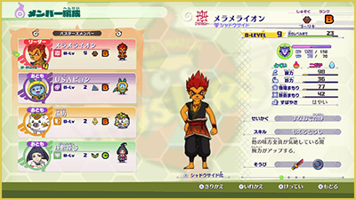
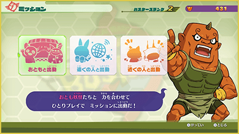
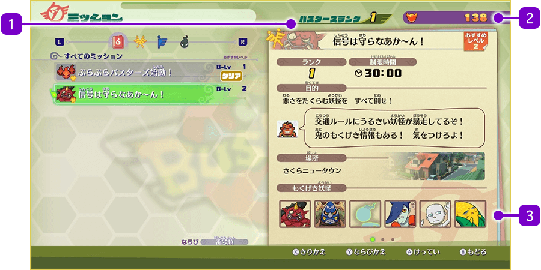
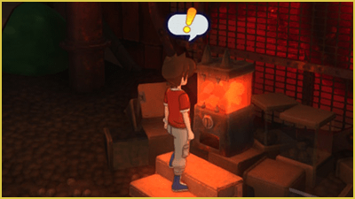

Blasters: Base infernal
Si posees "Yo-kai Watch 4: We Look Up at the Same Sky", necesitarás adquirir el DLC de pago para jugar a "Blasters++" (los poseedores de "Yo-kai Watch 4++" no necesitan comprarlo).
La "Base Blasters Infernal" cuenta con diversas funciones. Cuando quieras iniciar una misión o utilizar cualquiera de sus instalaciones, habla con los Yo-kai que se encuentran en la base.
Formación (Felisonte)
Al hablar con Felisonte, puedes organizar al equipo que saldrá a la misión.
Asegúrate de tener listo tu equipo antes de empezar.
Reglas de organización del equipo
Todos los miembros del equipo en "Blasters++" son Yo-kai.
El equipo se compone de un "Líder" (el Yo-kai que controlas al iniciar) y hasta 3 "Acompañantes".
Los acompañantes te seguirán cuando selecciones la opción "Desplegarse"
※ En el modo multijugador, según el número de participantes, es posible que solo te acompañe el primer Yo-kai de la lista.

Iniciar misión (Capi-Cachas)
Habla con Capi-Cachas para salir de misión. Si juegas en solitario, selecciona "Desplegarse con acompañantes" y luego elige la misión que desees.
Tras revisar la formación, selecciona "¡Despliegue Blasters!" para empezar.

Pantalla de selección de misión
Elige la misión que quieras de la lista situada a la izquierda de la pantalla.

- 1Rango Blasters
- Aumenta la primera vez que completas una misión o según el número total de Orbes Oni acumulados.
Al subir de rango, se desbloquearán nuevas misiones. - 2Orbes Oni obtenidos
- Se obtienen durante las misiones y se usan para entrenar a los Yo-kai o comprar en la tienda de Nomevén.
- 3Detalles de la misión seleccionada
- Puedes cambiar la vista de la información pulsando Ⓧ.
Entrenamiento (Entrenador Rapidizo)
Habla con el Entrenador Rapidizo para cargar Orbes Oni y subir el Nivel Blasters (Nivel-B) de tus Yo-kai. Selecciona al Yo-kai que quieras entrenar y pulsa Ⓐ para transferir la energía. Mantén pulsado Ⓐ si deseas subir varios niveles de golpe.
Tienda (Vendedor Nomevén)
Comprar: Puedes gastar Orbes Oni para obtener diversos objetos.
Vender: Puedes vender "Huevos Oni" para conseguir Orbes Oni.
※ Los Huevos Oni se pueden obtener mediante el escaneo de Arks y otras funciones.
Datos (Whisper)
Habla con Wisper para revisar tus estadísticas de combate y consultar la guía de ayuda.
Expendekai Oni
Interactúa con la Expendekai Oni para usar "Monedas Oni" y conseguir Yo-kai u objetos. A diferencia de la Expendekai normal, puedes usarla todas las veces que quieras al día.
※ Las Monedas Oni se consiguen durante las misiones o comprándolas en la tienda.
